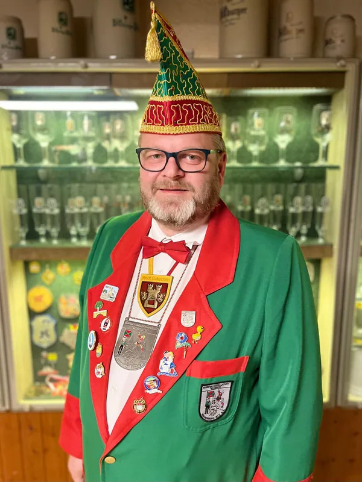
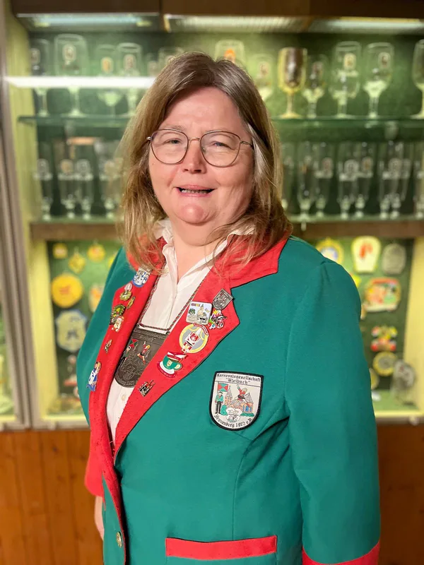
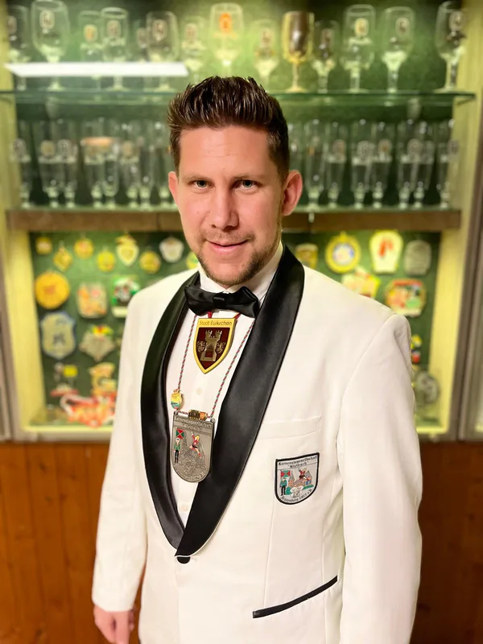
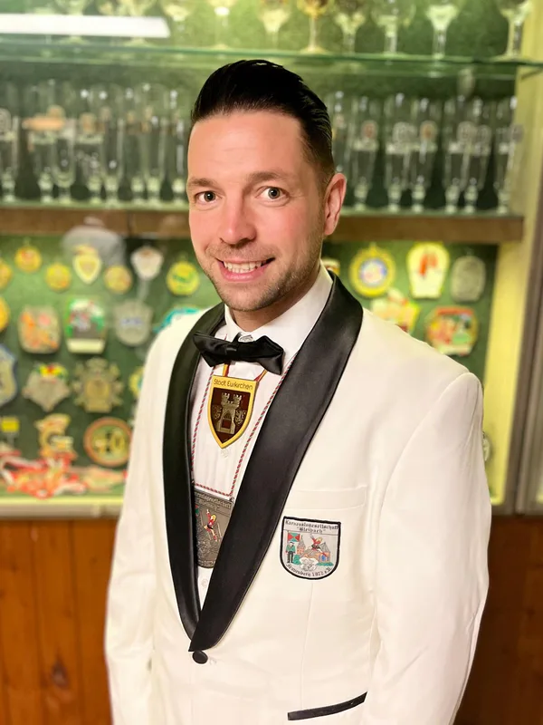
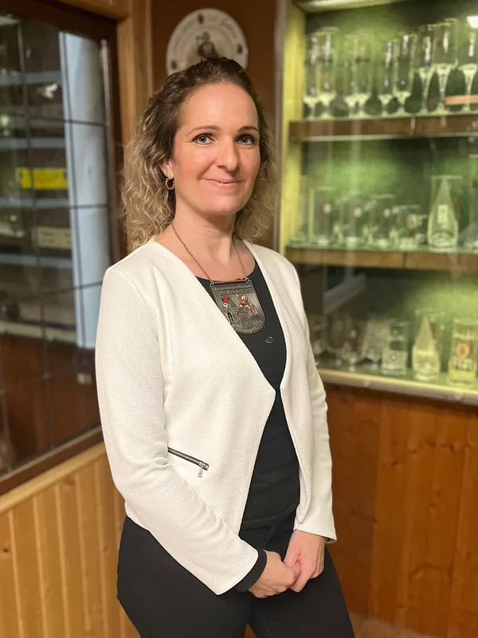
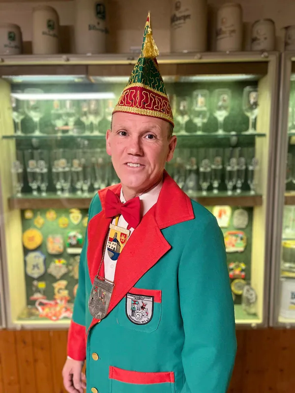
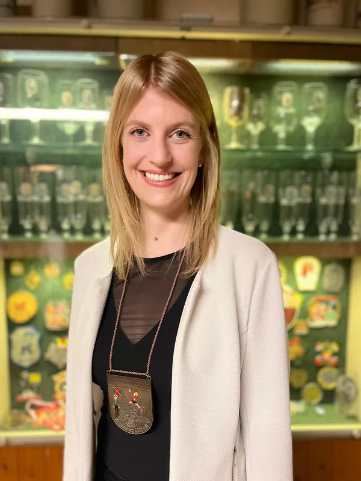
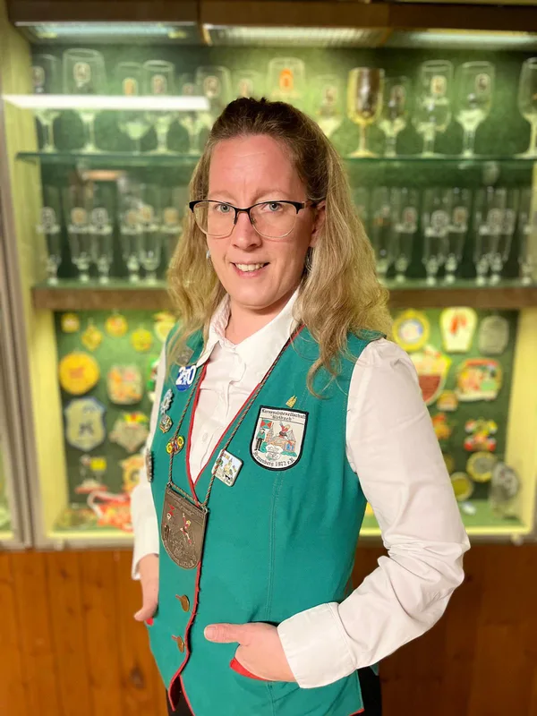
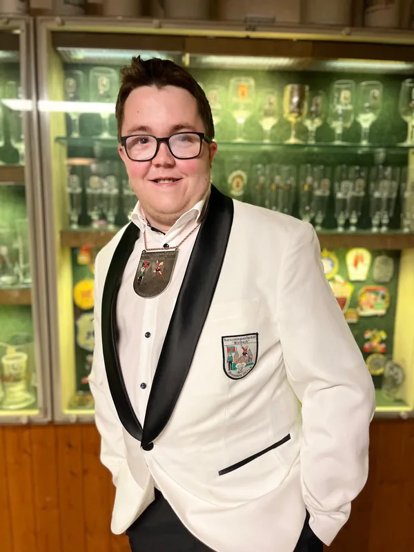
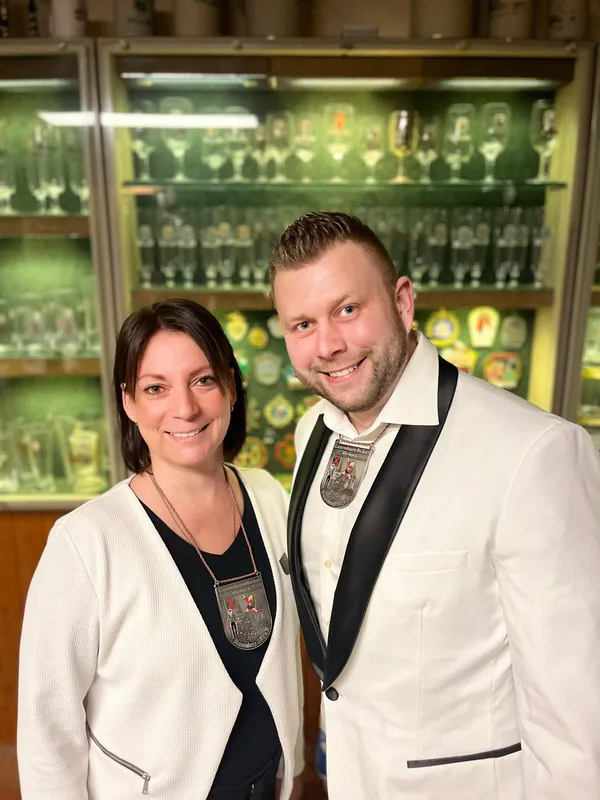

Der Vorstand
Auf unserer jährlichen Jahreshauptversammlung ist ein neuer und rein zahlenmäßig deutlich stärkerer Vorstand gewählt worden. Ich freue mich sehr, dass mich die Mitglieder zum ersten Geschäftsführer gewählt haben. Ich nehme diese Wahl sehr gerne an und freue mich auf die neuen Herausforderungen und die Zusammenarbeit mit den anderen Vorstandskollegen.
Als neuer Präsident wurde Matthias Reinig gewählt. Er leitet seit einigen Jahren zusammen mit Guido Eßer, der als 2. Kassierer weiterhin zur Vorstandscrew gehört, die Geschicke der KG. Mechtilde Kiel wurde zur stellvertretenden Präsidentin gewählt. Als 2. Geschäftsführer konnten wir Michael Schorn, den Sohn unseres Gründungsmitglieds Charly, gewinnen — und mit ihm seine Freundin Tabea Reimann als Schriftführerin. Neu besetzt haben wir auch eine der wichtigsten Positionen: Kristina Stojkovic ist unsere 1. Kassiererin. Becci Eßer-Hoffmann bleibt uns mit ihrem Know-how als Veranstaltungsleiterin erhalten. Komplettiert wird die Crew durch Christoph Schmitz (Beisitzer), Linda Kaiser (Kassenprüferin) und Stephan Stojkovic (Kassenprüfer).
Mit dieser starken Truppe möchten und werden wir die Zukunft des Karnevals in FrauObI gestalten.

Matthias ReinigPräsident 
Mechtilde KielStellv. Präsidentin 
Sebastian Kaiser1. Geschäftsführer 
Michael Schorn2. Geschäftsführer 
Kristina Stojkovic1. Kassiererin 
Guido Eßer2. Kassierer 
Tabea ReimannSchriftführerin 
Becci Eßer-HoffmannVeranstaltungsleiterin 
Christoph Schmitz1. Beisitzer 
Linda KaiserKassenprüferinStephan StojkovicKassenprüfer - MitmachenDabei sein?Werde Karnevalsretter — ob aktiv oder inaktiv.Zur Mitgliedschaft →